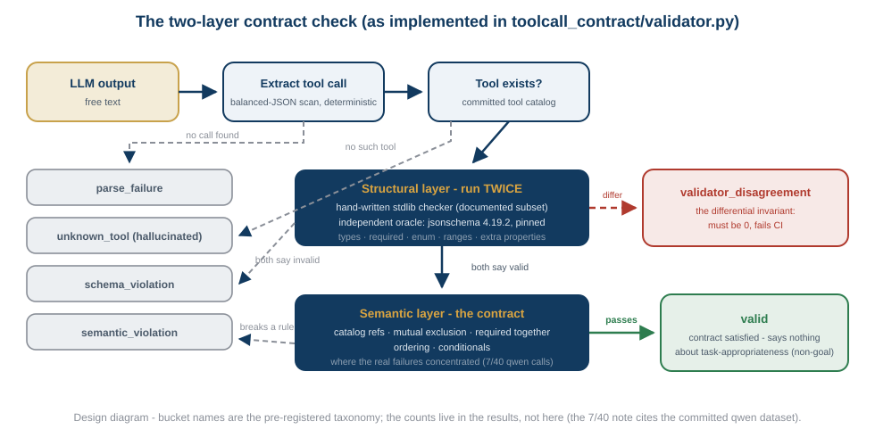
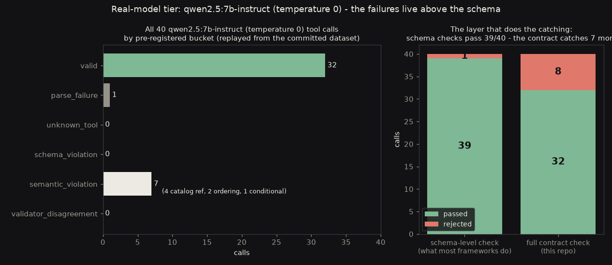

LLMs emit structured tool calls that mostly parse, type-check, and validate - and still break the contract. This is my navigation shield's architecture pointed at the problem every agent framework has right now: a deterministic two-layer validator, an independent oracle, and the finding that the failures live above the schema.
The structural layer - does the call parse, name a real tool, satisfy its JSON Schema? - is a standard-library checker with zero runtime dependencies, differentially tested against the mature jsonschema package, pinned exactly. On every structural verdict, every committed and fuzzed case, both checkers run and must agree; a disagreement is a bug in one of them, surfaced, never smoothed. The tests assert the oracle's sharp edges by name: bool is not a number, 1.0 is a valid integer, True is not a member of enum [1].
The semantic layer carries the contract rules a schema does not: referential integrity against live catalogs, mutually exclusive parameters, parameters required together or in order, conditionals. It is declared as data beside each tool - and it is where the real failures concentrated.


The headline is the right panel: a schema-level check - what most agent frameworks do - passes 39 of 40 of this model's calls. The contract passes 32. Everything substantive lived above the schema, which is the thesis of the repository, demonstrated on committed data.
The thesis then survived its first replication. The same forty tasks put to llama-3.3-70b-versatile (temperature 0, hosted) - ten times the parameters - produced zero schema violations and five contract violations: the same three failure families as the 7B model (nonexistent entities transcribed faithfully, a delivery scheduled to end before it starts, a zone rule with no zone). A schema-level check again passes 39 of 40. Strangest detail: both models' single parse failure is the same task - asked to rotate a camera no tool controls, qwen emitted an empty object and llama wrote a prose refusal naming the missing capability. Neither invented a tool.
And the honest boundary, with committed examples: the model also silently substituted impossible requests into contract-valid calls - "warehouse 3" became an existing waypoint, "5 m/s" became 0.5, "turn the robot off" became a status report. Those land in valid, because they satisfy the contract. Whether a call matches the user's intent is a task-appropriateness axis this validator pre-declared as a non-goal - those cases are why the axes exist separately, and why merging them into one "valid" score would be a lie.
Backing it all: a 262-case constructed tier with every label confirmed by the oracle before it counts, dataset regeneration diff-checked in CI, and the 25,000-pair seeded differential - deterministic on purpose, because an asserted count must not drift. Facts about two models - a 7B and a 70B - each at one temperature on the same n=40, reported per model and never averaged, worded that way everywhere.